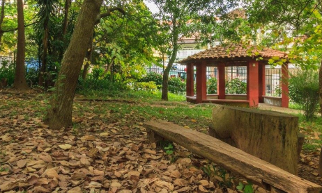
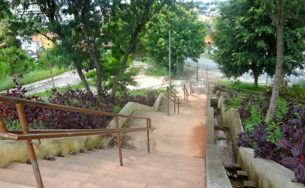
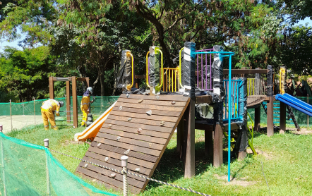

|
História | Lazer | Educação | Saúde e Segurança | Shopping Tietê Plaza |
|
|
História | Lazer | Educação | Saúde e Segurança | Shopping Tietê Plaza |
Pirituba é o 2º bairro mais verde de São Paulo. Ele possui diversas áreas de lazer propícias para práticas esportivas. Além disso, existem diversos parques, alguns possuem pistas de cooper e de bicicleta, equipamentos para auxílio de exercícios, quadras esportivas, lagos, entre outros, sempre visando a prática de exercícios físicos.
O Parque Cidade Toronto foi criado em julho de 1992 pela Prefeitura de São Paulo em parceria e com a prefeitura da cidade de Toronto, Canadá. A escolha de sua localização foi o grande lago situado na região, que vinha causando diversos problemas para a população, pois diversos acidentes ocorriam lá e eles precisavam de uma contrução para impedi-los. O parque conta com diversas atrações de lazer como pistas de caminhada, quadras esportivas, playgounds e diversos animais como frangos-d’água, martins-pescadores-grandes, socós-dorminhocos, biguás, garças-brancas-grandes, capivaras e muitos outros. Sua maior movimentação costuma acontecer em domingos por volta das 15h. [1]


O Parque Jacintho Alberto foi inaugurado em 2007 com a intenção de ser apenas uma praça para praticar exercícios físicos. O parque conta com diversas áreas de lazer, sendo pistas para caminhadas, pistas para skate, quadras esportivas e diversas outras atrações. Nesse parque também podemos encontrar diversos animais, entre eles: oito espécies de borboletas e 29 de aves, por exemplo, o quiri-quiri, rolinha, maracanã-nobre e até tucanos. [2]
  O Parque Estadual do Jaraguá é um parque construído ao redor do Pico do Jaraguá, que é uma área de preservação brasileira. A área vem sendo conservada desde 1961 e se encontra no ponto mais alto da cidade de São Paulo, elevando-se a uma altitude de 1.135 metros, na Serra da Cantareira. Lá existem 4 tipos de trilhas a serem feitas: Trilha do Silêncio (baixa dificuldade e 30 min de duração), Trilha do Lago (baixa dificuldade e 20 min de duração), Trilha da Bica (média dificuldade e 45 min de duração) e Trilha do Pai Zé (alta dificuldade e 2h 30min de duração). Além disso, aos finais de semana, algumas tribos indígenas organizam feiras de artesanatos no alto do pico. [3]


A Casa de Nassau surgiu com a imigração dos holandeses para Pirituba em 1925, que originalmente era um clube holandês para reunir as famílias e amigos em épocas festivas. Hoje em dia, o local é um salão de eventos muito utilizado por escolas para fazer apresentações de festas juninas ou festas de final de ano. [4]


Em épocas esporádicas, acontece um festival gastronômico em uma praça, que conta com vários food trucks, barracas e atrações infantis. A festividade reúne diversas culturas e estilos de gastronomia que vão desde hot dogs até acarajés. Além disso, o local conta com uma programação incrível de covers e bandas que tocam ao vivo. O evento costuma acontecer a cada 2 meses e durar um final de semana. [5]